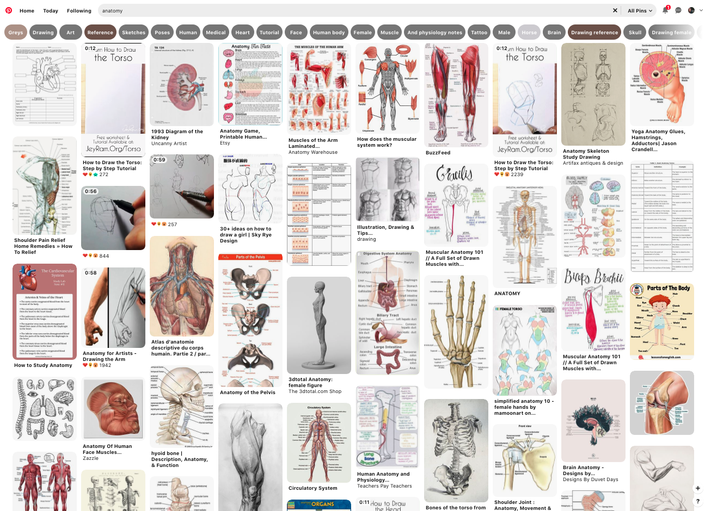
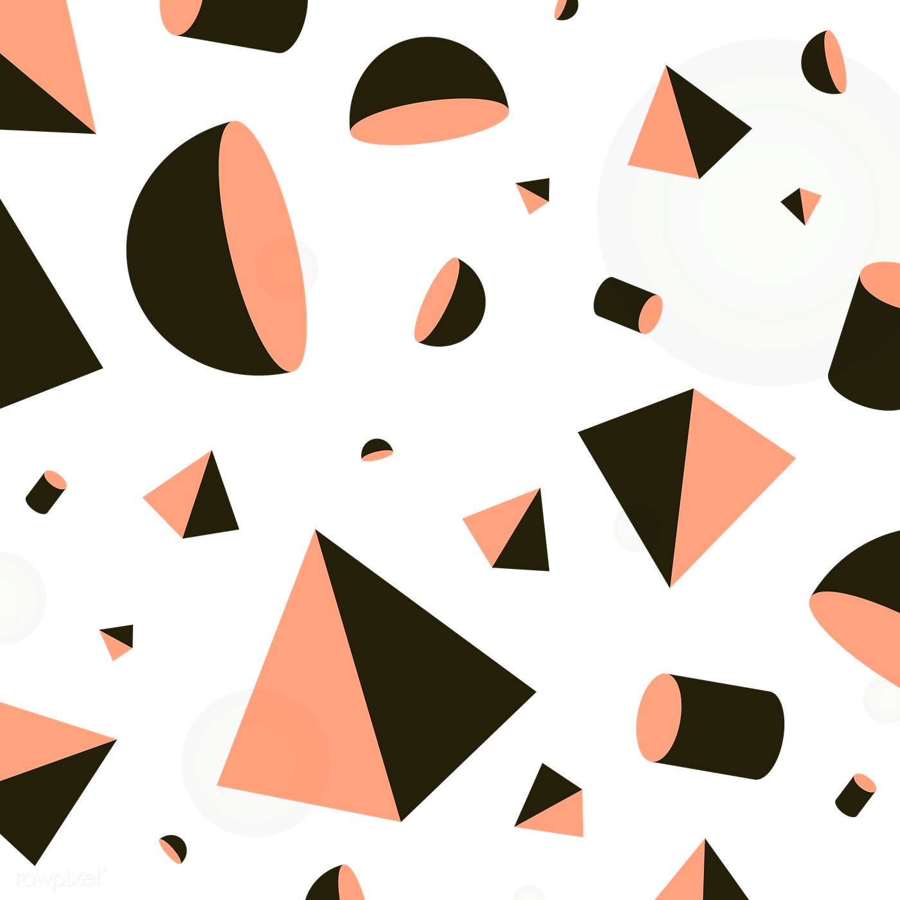
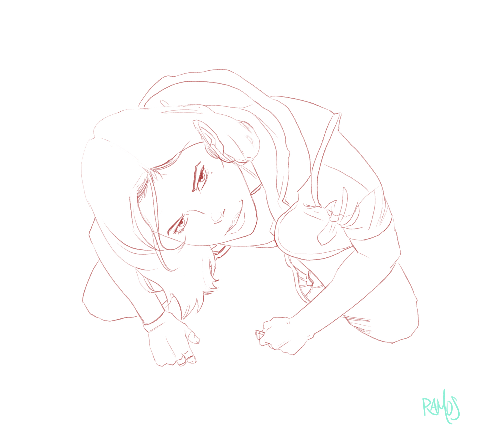
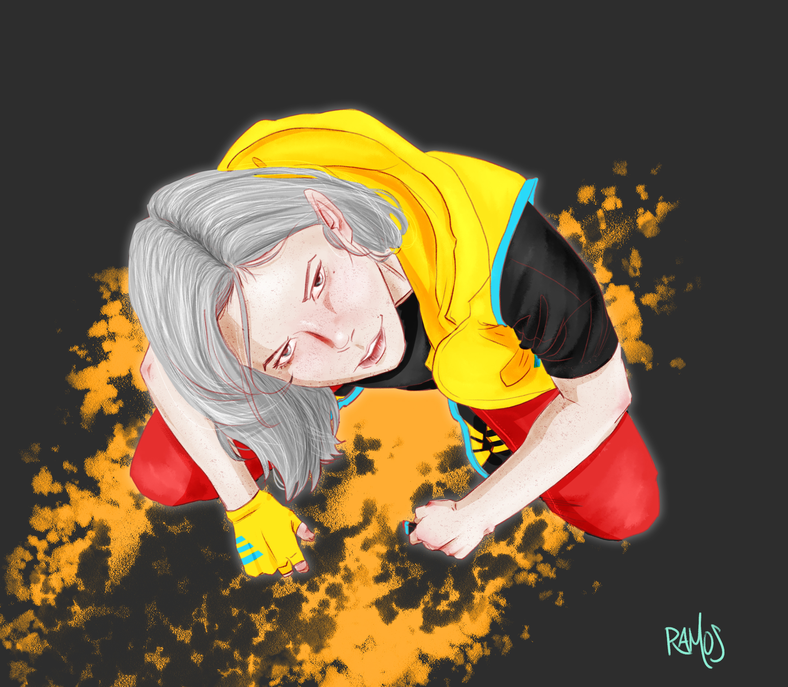

Ideas

Coming up with an idea is never easy, but there's a wide variety of places you can find inspiration from, the main one is your personal experiences, when that isn't enough you can always look for challenges or ideas on the internet.
Reference

Reference is always the most important step throughout your process, look for 10 times more references than you think are enough.
Big to small

Always go from general shapes to detaild forms, remember "We start big".
Mood

Before our drawing goes too far along we must look for yet some more reference, that's right folks, there's no such thing as too many reference images!
Lineart

Once we have our general shapes it's time for clean up, we get rid of our sketch to have a clean lineart as our base.
Flat coloring

Before we get into detailing and all the other funs stuff we must do our flat coloring, it's the base for our final step, this is what our mood reference was for so make good use of it.
Lighting and details

And now it's time for our details, this is the last 10% of our drawing which ironically takes up about 70% of our full drawing time, this is where we can see your skills so don't be lazy and finish your piece!